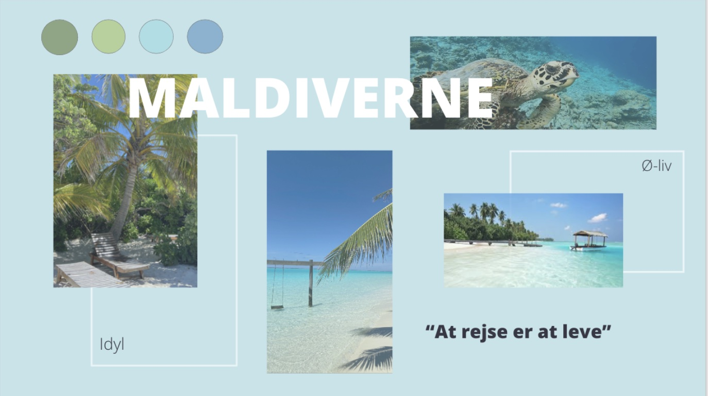
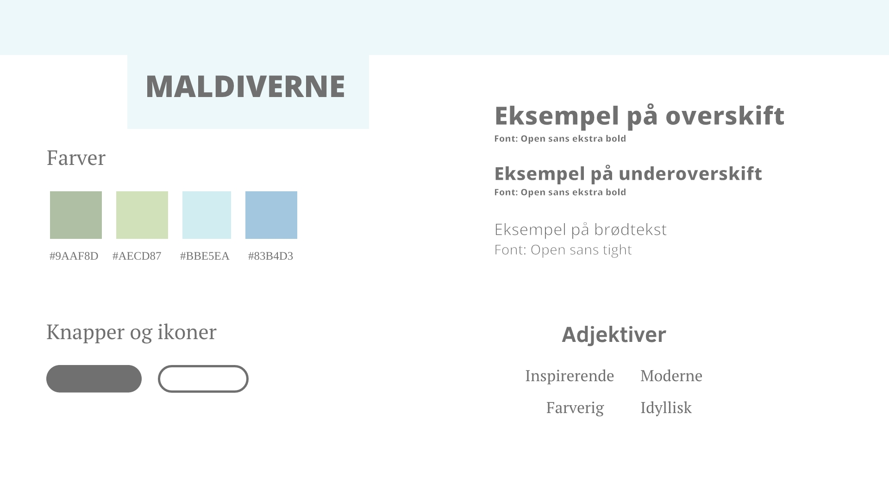
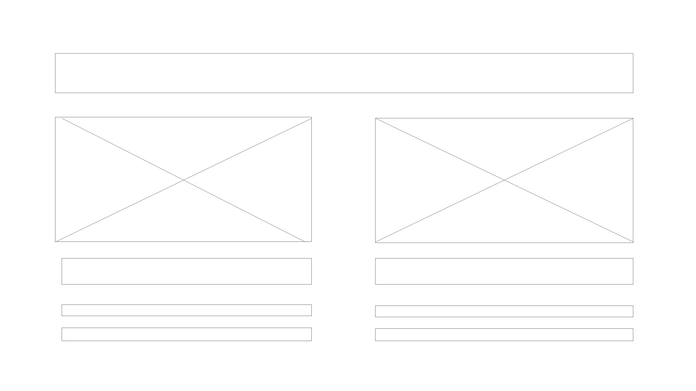

Grundlæggende Web
På temaet Grundlæggende web blev vi introduceret til de grundlæggende redskaber der skal bruges, til at opsætte et website i html og css. Vi lærte at benyttede VS code til at kode, Filezilla der hjalp med at publisere et website på sit domæne og one.com til at oprette sit eget domæne. Der blev i forløbet også arbejdet med designkonventioner og gestaltlove, som vi tog med når vi efterfølgende blev introduceret til moodboard, styletile, mockup. Til kodningen lærte vi om css grid, flex og media queries, som herefter også blev brugt til vores hovedopgave.
emnesite
Hovedopgaven handlede om at vi skulle udarbejde et emnesite om et valgfrit emne og stil. Her valgte jeg at lave et site om Maldiverne, da det var en rejseoplevelse jeg syntes der var rigtig god, samtidig med at jeg havde nogle gode billeder derfra. Til denne opgave lærte vi også om "mobile first" tilgangen. Derudover lærte vi om ophavsret og metadata.
klik på computeren for link
digital modernisme
Efter arbejde med designprincipper og stile, skulle vi til hovedopgaven vælge en stil. Jeg valgte den modernistiske stil, herunder den digital modernistiske stil. Kendetegnet ved modernismen generelt, er de her rene former og lige linjer, som jeg også har gjorde brug af på mit site. Formerne er simple og geometriske. Siden er meget luftig og detaljerne er ikke bare kastet ind. Både billede og tekst er sat ind i grids og der er tænkt over både opsætning og layout. Farverne afspejler mit emne i forhold til, at mange af billederne har de lidt mere kolde, enten blålige eller grønlige farver. Dem har jeg derfor brugt til både font farve og baggrundsfarve, for at siden bliver mere sammenhængene. Jeg valgte et symmetrisk centreret layout, samt billeder der flugter med hinanden, da det også er med til at give sitet de mere rene linjer. Fontene jeg brugte er san serif med forskellige tykkelser, for at give en kontrast til helheden af sitet.
moodbaord
styletile
wireframe
  Moodboard er en ting jeg har benyttet mig meget af på temaet. Jeg brugte moodboardet til at få mine tanker og ideer ned på et visuelt plan. Moodboardet er god som en start til et projekt, så man ved hvilken stil man vil gå efter.
Vi blev også introduceret til et styletile, som ses ovenfor. Jeg lærte at et styletile bruges lidt ligesom moodboardet, denne metode er dog mere konkret, da du her tilføjer hvilke fonte, farver og elementer du vælger at bruge.
Her er et eksempel på hvordan mit site ser ud, udfra en wireframe. Det bruges til at skabe et overblik og struktur inden man går igang med at kode, så man ved lige nøjagtigt hvor ens elementer skal placeres.